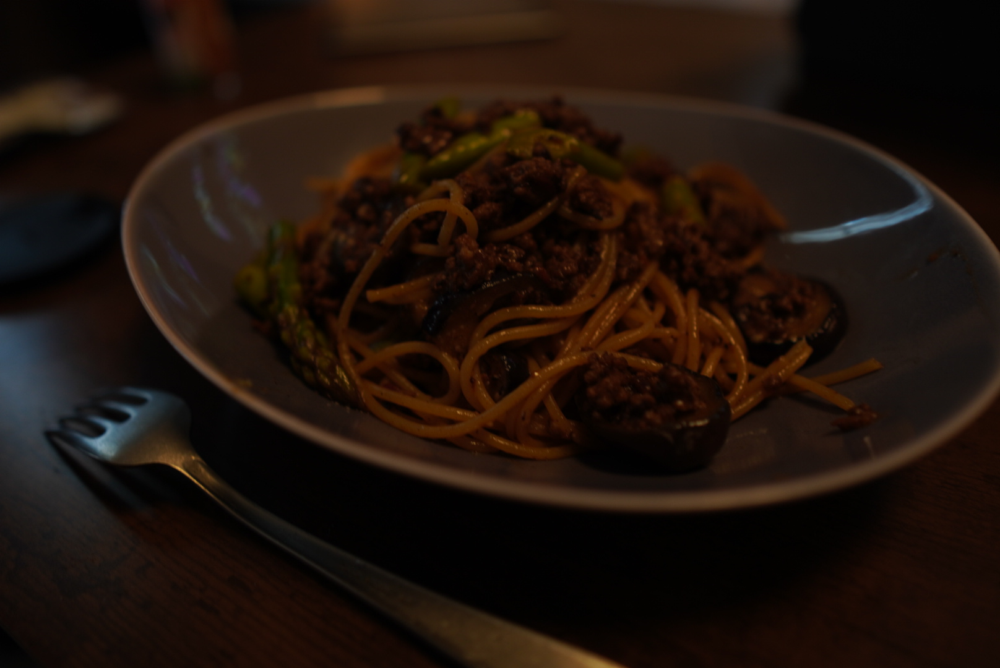

自己紹介
- twitter: @kondo_script
- 所属：株式会社 NoSchool
- 職業：エンジニアリングマネージャ
- 趣味：スパゲッティを料理すること

今日のテーマ
AI エディタを使って爆速でスライドを作ってみた話
bolt.new
以下のプロンプトでボイラープレートを作成
reveal.js を使ったスライド作成のテンプレートを作ってください
エンジニアが使う前提で、package.jsonに起動コマンドが書いてある
ローカルでプレゼンテーションをする用途
以下の動作サンプルを含むページがすでにある状態
画像の読み込み
文字のアニメーション
画面切り替え時のアニメーション
上記の使い方をまとめた日本語のREADME
まとめ
- AI コーディングはメタプログラミング
- エンジニアが使うツールとの相性が抜群